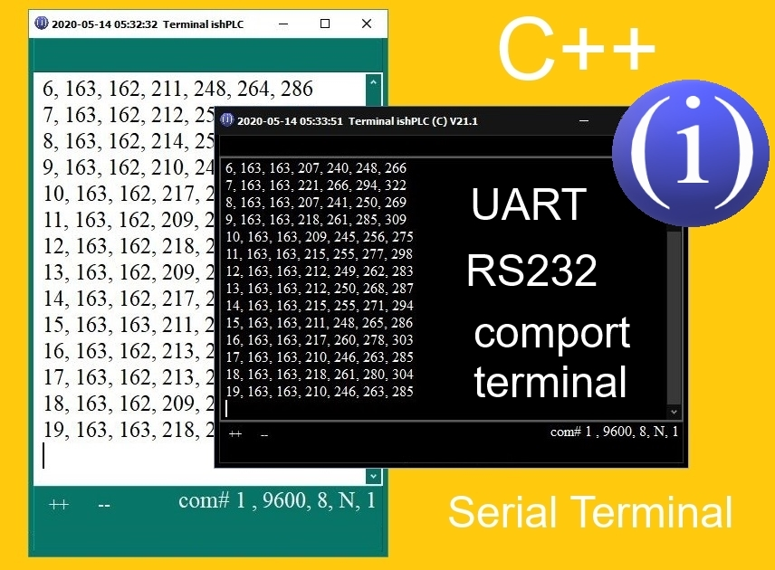
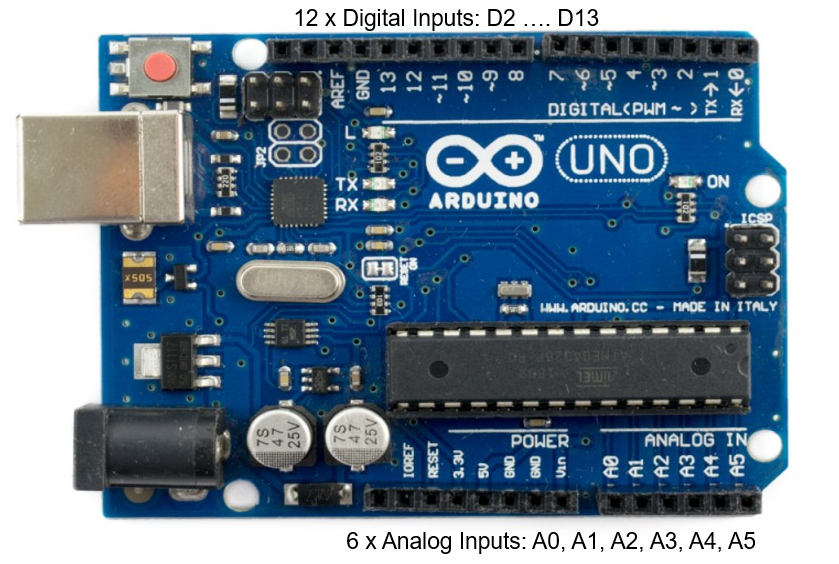

Serial Terminal ishPLC(C) 2020
"Free Version V21.2"

Program Purpose "Serial Terminal Free V21.2
This program is needed to work through the serial port. I work as an electronic engineer. I have to use a lot of different types of equipment, sensors, actuators, microcontrollers, network converters, meters, registrars, etc. For the adjustment and maintenance of equipment and various protocols, it is also necessary to use various programs. For work, I developed a convenient software "Serial Terminal V21.2", "for myself.""Serial Terminal Free Version V21.2" is a small program written in C ++ that is needed for express test equipment, including the popular Arduino PLC. Basic protocol settings: 9600, 8, N, 1. The port number can be selected in the Serial Terminal program, based on which port your PLC is currently connected to.
You can go to the PC in the Device Manager - Ports (COM & LPT) and look at which COM port your device is connected to (COM1). (It is possible to use additional utilities to determine the com port.)
In Arduino PLC, you must use the port setting:
void setup () {
Serial.begin(9600); // Serial (9600, 8, N, 1)
//..... code ....
}
To output data, for example, reading the value of analog input A0, and outputting this value for transmission to the serial port, you can use the code:
int sensorValue0 = analogRead(A0);
Serial.print(sensorValue0);
(Many of the Arduino PLC programs can be found on the Arduino website and other network resources.)
Work in the program "Serial Terminal":
1. In the "Port #" position, select the number of the active com port (1).
2. Click the "Connect Serial" button. If all the settings are made correctly, then data will be sent to your PC from the connected PLC. (Main window.) Otherwise, there will be an error message about the port opening. In this case, you need to check the Arduino PLC settings again, disconnect the USB adapter from the PC, reconnect it after a while. After about 10 - 15 seconds, you can again go to the PC in the Device Manager - Ports (COM & LPT) and look at which port your device is connected to (COM5, for example. This port must be selected in the program "Port #" (5)).
"Features of the program Serial Terminal"
1. zoom (++) and zoom (-) are buttons for increasing or decreasing the program’s working window, including the font.
2. "Receiving Data Indicator" - LED that lights when receiving data from the PLC.
3. The bottom right will show the selected port number and port settings.
Main window. Style "Lt."
Main window. Style "Dk."

Main window. Connected. Receiving data.

The program is very reliable, simple and easy to use. I recommend using this version for equipment testing: PC - PLC (Arduino for example), etc.
I tested it many times in different modes, and made the program "for myself".
New: Serial Terminal Pro (in Develop yet)
What will be added:
All protocol settings. Autosave the report to a file (received data), added the line "Send Data" and autosave to the log file (sent data), a keyboard, indicators of connection activity, receiving data, sending data, autosaving to files. I think it’s understandable why report files are convenient: the format of the received data is *.CSV file, which means that the report can be viewed both in a text editor and in any spreadsheet program.The ability to work according to the RS485 standard, the ability to send data from a file to the serial port will also be added. Recommendations for the file format: Language = English, Encoding = ANSI. The "sent data" panel will be added. Where can I download programs? I'm working on it. As soon as this issue is resolved, I will update the repository and lay out the links. Perhaps I will add something else to the program. And of course, there remains a choice of program styles: Light or Dark. If you have additional wishes, you can write me, I will be glad.